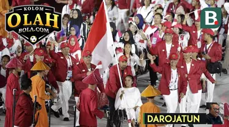

Home
Jakarta Halo pembaca, cukup lama saya tidak menulis kolom ini setelah saya mengulas soal makna historis dari Boxing Day di masa-masa Natal 2019. Uniknya, di saat yang sama justru Novel Corona Virus mulai unjuk gigi sebagai silent killer di Wuhan, Tiongkok. Kini, sekitar empat bulan sejak merebaknya wabah Covid-19 di ground zero tersebut Indonesia menjadi episentrum baru pandemik pneumonia anyar itu dan imbasnya pun sampai pada pembatalan sejumlah event olahraga di Tanah Air.
Well, kini lebih banyak waktu bagi saya untuk kembali menulis setelah banyak agenda rapat bisa dilakukan lewat concall dengan bekerja dari rumah. Pekan ini, gumpalan bola salju wabah Covid-19 membesar dengan diundurkannya perhelatan final Euro 2020 ke tahun depan, setelah sebelumnya sejumlah kompetisi 2019/20 semodel La Liga, Serie A, Premier League, Bundesliga, Liga Europa serta Liga Champions juga dihentikan.
Kembali ke Nusantara kita juga kemudian harus mencerna fakta bahwa kompetisi bola voli profesional, Proliga, juga mengikuti jejak pembekuan sementara kompetisi sepak bola kasta tertinggi di tanah air, Shopee Liga 1. Bila polemik pelik pengunduran Euro 2020 akhirnya berujung penundaan, saya rasa sudah saatnya panitia lokal Olimpiade Tokyo juga meninjau wacana pengunduran pesta olahraga empat tahunan itu dari Agustus 2020 ke tahun depan. Hal yang sama jelas harus jadi bahan pertimbangan Kemenpora untuk mereview kelayakan diselenggarakannya PON Papua di Oktober mendatang.
Olimpiade dan PON adalah sebuah melting pot alias bejana peleburan ribuan atlet dari berbagai pelosok dan selama vaksin serta obat untuk mengatasi wabah Covid-19 belum bisa didistribusikan secara merata dan efektif pada waktunya, sangat tidak mungkin kita memutuskan untuk berada di dalam pesta olahraga tersebut. Seorang rekan saya yang bergelar doktor matematika di ITB bersama timnya sudah merancang sebuah pemodelan dengan berbasis fenomena outbreak di beberapa negara lain yang ujungnya berguna untuk memprediksi kasus Covid-19 di Indonesia. Ia memprediksi pada mid-April mendatang wabah Covid-19 di Indonesia bakal mencapai puncaknya dengan menginfeksi total 8000 orang.
Pada periode tersebut juga dihipotesakan akan terjadi temuan kasus baru mencapai 600 orang positif pengidap Covid-19 per hari. Kondisi ini tidak ideal bagi atlet daerah dan nasional untuk terus melakukan persiapan dalam sejumlah pemusatan latihan. So, prestasi apa yang bakal kira-kira mereka tunjukkan pada gelaran Olimpiade Tokyo dan PON Papua bila tetap dipaksakan terlaksana pada 2020?